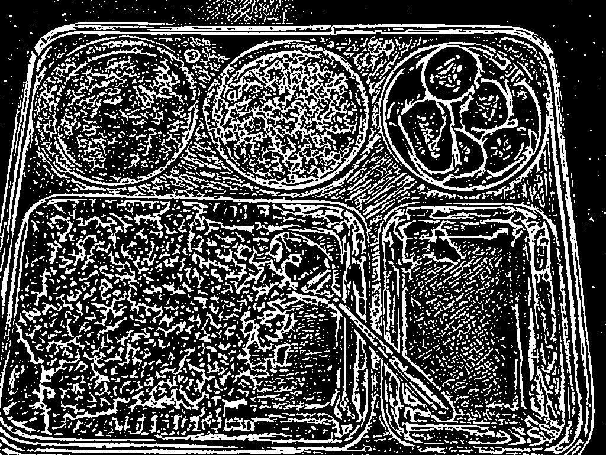
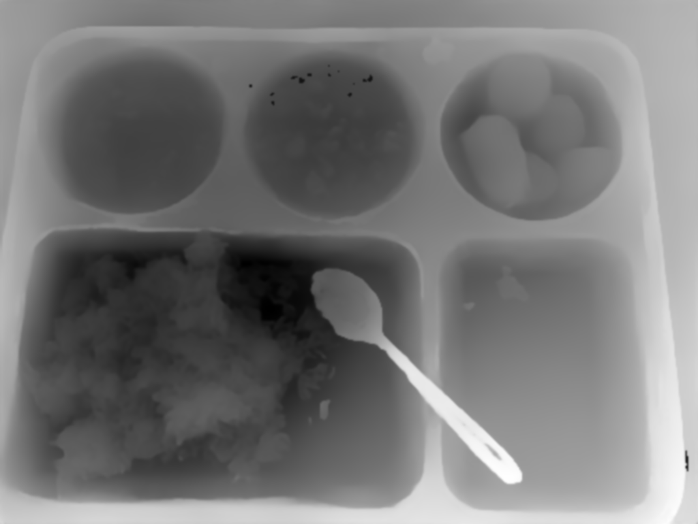
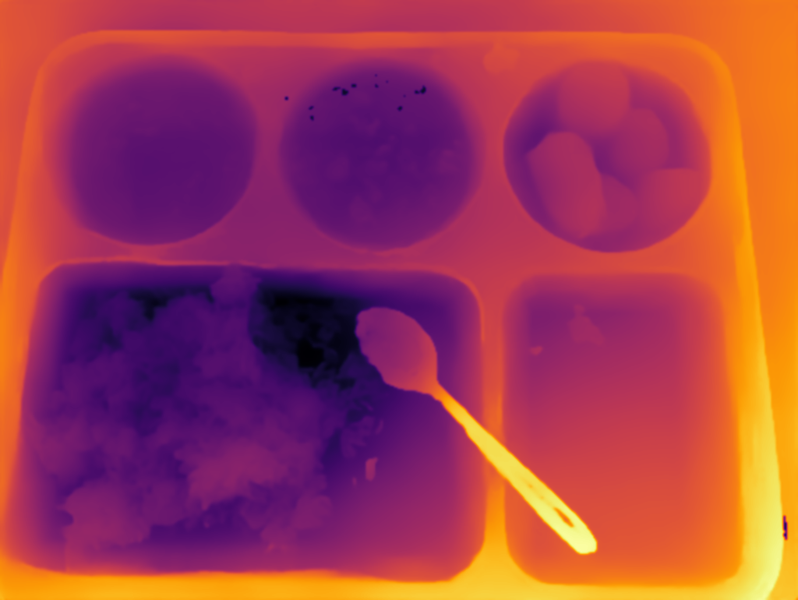
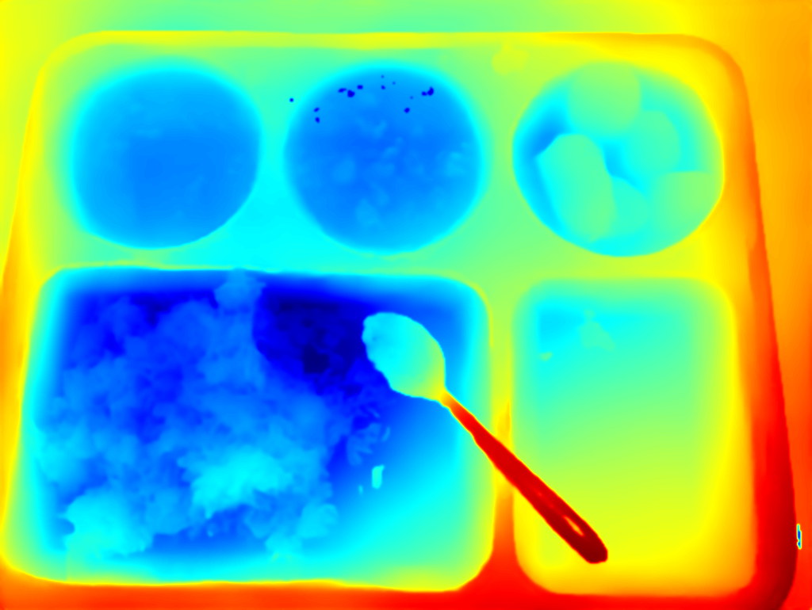
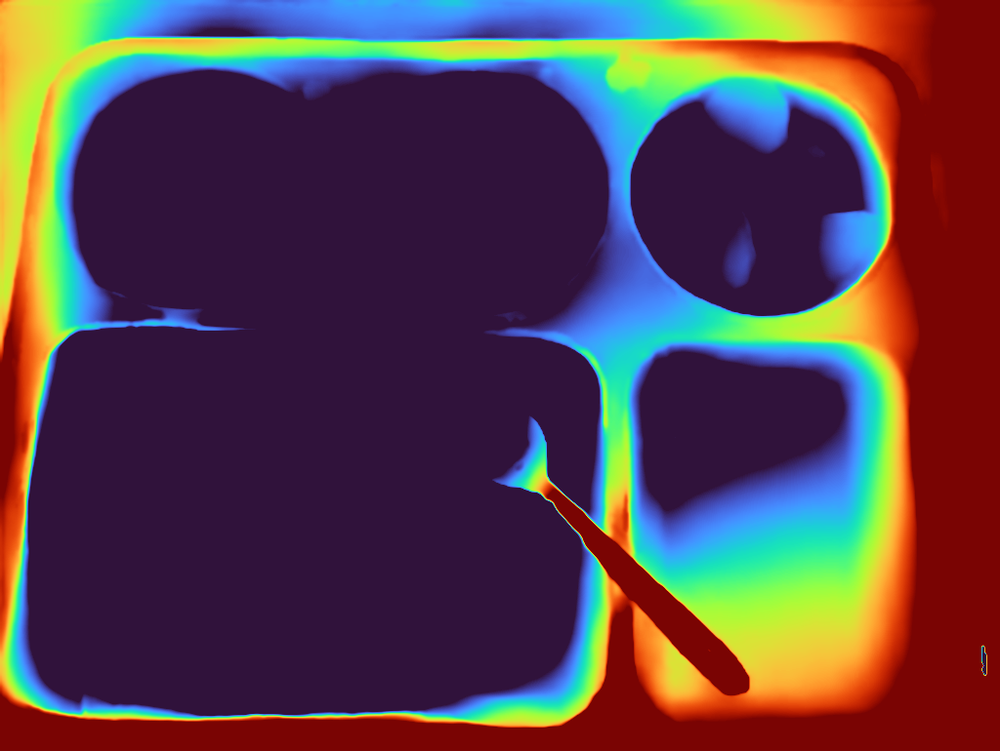
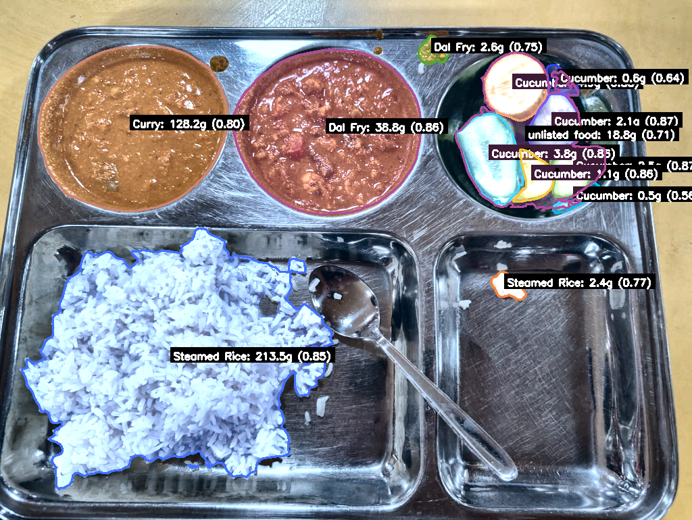

{
"resolution": "1600x1204",
"channels": 3,
"dtype": "uint8",
"expected_items": [
"Steamed Rice",
"Dal Fry",
"Curry",
"Cucumber"
],
"plate_profile": null,
"debug": true
}







[]
{
"item_id": "Cucumber_1",
"area_pixels": 7249,
"estimated_height_cm": 0.84,
"volume_estimate_ml": 8.2,
"density": 0.6,
"mass_g": 4.9,
"class_label": "Cucumber",
"class_confidence": 0.9174,
"depth_stability": 1.0,
"scale_confidence": 0.7,
"composite_confidence": 0.8761,
"prior_applied": true
}{
"item_id": "Cucumber_2",
"area_pixels": 4736,
"estimated_height_cm": 0.791,
"volume_estimate_ml": 4.2,
"density": 0.6,
"mass_g": 2.5,
"class_label": "Cucumber",
"class_confidence": 0.9135,
"depth_stability": 1.0,
"scale_confidence": 0.7,
"composite_confidence": 0.8742,
"prior_applied": true
}{
"item_id": "Cucumber_3",
"area_pixels": 4993,
"estimated_height_cm": 0.45,
"volume_estimate_ml": 3.5,
"density": 0.6,
"mass_g": 2.1,
"class_label": "Cucumber",
"class_confidence": 0.9032,
"depth_stability": 1.0,
"scale_confidence": 0.7,
"composite_confidence": 0.8693,
"prior_applied": true
}{
"item_id": "Cucumber_4",
"area_pixels": 9058,
"estimated_height_cm": 0.466,
"volume_estimate_ml": 6.3,
"density": 0.6,
"mass_g": 3.8,
"class_label": "Cucumber",
"class_confidence": 0.8855,
"depth_stability": 1.0,
"scale_confidence": 0.7,
"composite_confidence": 0.8607,
"prior_applied": true
}{
"item_id": "Dal Fry_5",
"area_pixels": 53211,
"estimated_height_cm": 1.538,
"volume_estimate_ml": 35.7,
"density": 1.087,
"mass_g": 38.8,
"class_label": "Dal Fry",
"class_confidence": 0.8794,
"depth_stability": 1.0,
"scale_confidence": 0.7,
"composite_confidence": 0.8578,
"prior_applied": true
}{
"item_id": "Cucumber_6",
"area_pixels": 2733,
"estimated_height_cm": 0.45,
"volume_estimate_ml": 1.9,
"density": 0.6,
"mass_g": 1.1,
"class_label": "Cucumber",
"class_confidence": 0.8783,
"depth_stability": 1.0,
"scale_confidence": 0.7,
"composite_confidence": 0.8572,
"prior_applied": true
}{
"item_id": "Steamed Rice_7",
"area_pixels": 115896,
"estimated_height_cm": 1.688,
"volume_estimate_ml": 198.2,
"density": 1.077,
"mass_g": 213.5,
"class_label": "Steamed Rice",
"class_confidence": 0.8549,
"depth_stability": 1.0,
"scale_confidence": 0.7,
"composite_confidence": 0.8457,
"prior_applied": true
}{
"item_id": "Curry_8",
"area_pixels": 54250,
"estimated_height_cm": 2.12,
"volume_estimate_ml": 116.6,
"density": 1.1,
"mass_g": 128.2,
"class_label": "Curry",
"class_confidence": 0.7663,
"depth_stability": 1.0,
"scale_confidence": 0.7,
"composite_confidence": 0.8007,
"prior_applied": true
}{
"item_id": "Steamed Rice_9",
"area_pixels": 1345,
"estimated_height_cm": 1.688,
"volume_estimate_ml": 2.3,
"density": 1.03,
"mass_g": 2.4,
"class_label": "Steamed Rice",
"class_confidence": 0.7034,
"depth_stability": 1.0,
"scale_confidence": 0.7,
"composite_confidence": 0.7671,
"prior_applied": true
}{
"item_id": "Dal Fry_10",
"area_pixels": 1455,
"estimated_height_cm": 3.49,
"volume_estimate_ml": 2.4,
"density": 1.079,
"mass_g": 2.6,
"class_label": "Dal Fry",
"class_confidence": 0.6745,
"depth_stability": 1.0,
"scale_confidence": 0.7,
"composite_confidence": 0.7512,
"prior_applied": true
}{
"item_id": "Cucumber_11",
"area_pixels": 1497,
"estimated_height_cm": 0.64,
"volume_estimate_ml": 1.0,
"density": 0.6,
"mass_g": 0.6,
"class_label": "Cucumber",
"class_confidence": 0.4953,
"depth_stability": 1.0,
"scale_confidence": 0.7,
"composite_confidence": 0.6437,
"prior_applied": true
}{
"item_id": "Cucumber_12",
"area_pixels": 1179,
"estimated_height_cm": 0.665,
"volume_estimate_ml": 0.8,
"density": 0.6,
"mass_g": 0.5,
"class_label": "Cucumber",
"class_confidence": 0.3687,
"depth_stability": 1.0,
"scale_confidence": 0.7,
"composite_confidence": 0.5554,
"prior_applied": true
}{
"item_id": "unlisted food_13",
"area_pixels": 34018,
"estimated_height_cm": 0.545,
"volume_estimate_ml": 18.8,
"density": 1.0,
"mass_g": 18.8,
"class_label": "unlisted food",
"class_confidence": 0.6921,
"depth_stability": 0.75,
"scale_confidence": 0.7,
"composite_confidence": 0.7081,
"prior_applied": false
}

{
"food_items": [
{
"name": "Cucumber",
"volume_ml": 25.9,
"mass_g": 15.5,
"calories": 5.2,
"protein": 0.0,
"carbs": 0.5,
"fat": 0.0,
"confidence": 0.8761,
"class_label": "Cucumber",
"class_confidence": 0.9174,
"top_k": [
{
"label": "Cucumber",
"confidence": 0.9174,
"raw_similarity": 0.9174
}
],
"identification_status": "recognized",
"menu_match": true,
"matched_menu_item": "Cucumber",
"identification_confidence": 0.9174,
"segmentation_confidence": 0.9174,
"association_confidence": 1.0,
"menu_match_confidence": 1.0,
"depth_confidence": 1.0,
"scale_confidence": 0.7,
"instance_count": 7
},
{
"name": "Dal Fry",
"volume_ml": 38.1,
"mass_g": 41.4,
"calories": 56.9,
"protein": 2.8,
"carbs": 7.7,
"fat": 1.7,
"confidence": 0.8578,
"class_label": "Dal Fry",
"class_confidence": 0.8794,
"top_k": [
{
"label": "Dal Fry",
"confidence": 0.8794,
"raw_similarity": 0.8794
}
],
"identification_status": "recognized",
"menu_match": true,
"matched_menu_item": "Dal Fry",
"identification_confidence": 0.8794,
"segmentation_confidence": 0.8794,
"association_confidence": 1.0,
"menu_match_confidence": 1.0,
"depth_confidence": 1.0,
"scale_confidence": 0.7,
"instance_count": 2
},
{
"name": "Steamed Rice",
"volume_ml": 200.5,
"mass_g": 215.9,
"calories": 222.3,
"protein": 4.3,
"carbs": 48.5,
"fat": 0.0,
"confidence": 0.8457,
"class_label": "Steamed Rice",
"class_confidence": 0.8549,
"top_k": [
{
"label": "Steamed Rice",
"confidence": 0.8549,
"raw_similarity": 0.8549
}
],
"identification_status": "recogni[
{
"step": "Input",
"message": "Original image saved",
"params": {
"resolution": "1600x1204"
},
"elapsed_s": 0.0916,
"input_file": null,
"output_file": "original.png",
"timestamp": "2026-11-11T22:03:25.823677"
},
{
"step": "Pipeline",
"message": "Step 1 — Preprocessing & Perspective Warp",
"params": {},
"elapsed_s": null,
"input_file": null,
"output_file": null,
"timestamp": "2026-11-11T22:03:25.823677"
},
{
"step": "Quality Gate",
"message": "PASS",
"params": {
"blur_score": 351.14,
"tilt_deg": 25.0
},
"elapsed_s": null,
"input_file": null,
"output_file": null,
"timestamp": "2026-11-11T22:03:25.927785"
},
{
"step": "Preprocessing",
"message": "Resize applied",
"params": {
"original": "1600x1204",
"target_long_edge": 1024,
"scale": 0.64
},
"elapsed_s": 0.0009,
"input_file": null,
"output_file": "01_resized.png",
"timestamp": "2026-11-11T22:03:25.972230"
},
{
"step": "Preprocessing",
"message": "Gaussian blur applied",
"params": {
"kernel": 5
},
"elapsed_s": 0.0007,
"input_file": null,
"output_file": "02_denoised.png",
"timestamp": "2026-11-11T22:03:26.012983"
},
{
"step": "Preprocessing",
"message": "LAB color normalization applied",
"params": {},
"elapsed_s": 0.149,
"input_file": null,
"output_file": "03_color_normalized.png",
"timestamp": "2026-11-11T22:03:26.216994"
},
{
"step": "Preprocessing",
"message": "CLAHE contrast enhancement applied",
"params": {
"clip_limit": 2.0,
"tile_grid": "8x8"
},
"elapsed_s": 0.0096,
"input_file": null,
"output_file": "04_contrast_enhanced.png",
"timestamp": "2026-11-11T22:03:26.280558"
},
{
"step": "Preprocessing",
"message": "Canny edge detection",
"params": {
"low": 50,
"high": 150
},
"elapsed_s": 0.0| Step | Message | Params | Time |
|---|---|---|---|
| Input | Original image saved | {"resolution": "1600x1204"} | 0.0916s |
| Pipeline | Step 1 — Preprocessing & Perspective Warp | — | — |
| Quality Gate | PASS | {"blur_score": 351.14, "tilt_deg": 25.0} | — |
| Preprocessing | Resize applied | {"original": "1600x1204", "target_long_edge": 1024, "scale": 0.64} | 0.0009s |
| Preprocessing | Gaussian blur applied | {"kernel": 5} | 0.0007s |
| Preprocessing | LAB color normalization applied | — | 0.1490s |
| Preprocessing | CLAHE contrast enhancement applied | {"clip_limit": 2.0, "tile_grid": "8x8"} | 0.0096s |
| Preprocessing | Canny edge detection | {"low": 50, "high": 150} | 0.0185s |
| Preprocessing | Warp skipped (no 4-pt contour) | {"warped": false} | — |
| Preprocessing | Complete | {"output_size": "1024x770"} | 0.5312s |
| Pipeline | Step 2 — Compartments & Scale | — | — |
| Compartment Detection | Detected 0 compartments | {"min_area_frac": 0.02, "max_area_frac": 0.9, "compartment_count": 0} | 0.0101s |
| Scale Calibration | Fallback to bbox-based calibration | {"cm_per_pixel": 0.03559, "method": "bbox"} | — |
| Compartment Detection | Scale computed | {"cm_per_pixel": 0.03559, "pixel_area_cm2": 0.00126671, "compartments": 0, "scale_confidence": 0.7} | 0.0725s |
| Pipeline | Step 3 — Depth Estimation | — | — |
| Depth Estimation | Depth Anything depth map computed (smoothed) | {"device": "cuda", "is_metric": true, "shape": [770, 1024], "min": -90.211, "max": -47.537} | 25.8692s |
| Depth Normalization | Baseline subtracted from depth | {"baseline": -70.695, "is_metric": true} | 0.0061s |
| Depth Metric [cm] | Metric depth height in cm directly computed | {"cm_per_pixel": 0.03559, "min_cm": 0.0, "max_cm": 15.0, "mean_cm": 3.42} | 0.0024s |
| Depth Estimation | Complete | — | 25.9669s |
| Pipeline | Step 4–6 — SAM 3 Food Identification & Segmentation | — | — |
| SAM3 | Identified 13 food items (12 recognized, 0 unlisted, 1 uncertain) | — | 63.6366s |
| Pipeline | Step 7 — Volume & Mass Estimation | — | — |
| Volume Estimation | Computed mass for 13 items | {"total_items": 13} | 0.0966s |
| Pipeline | ✅ Pipeline complete | {"total_food_items": 13, "avg_confidence": 0.7898, "scale_method": "bbox"} | 90.6907s |